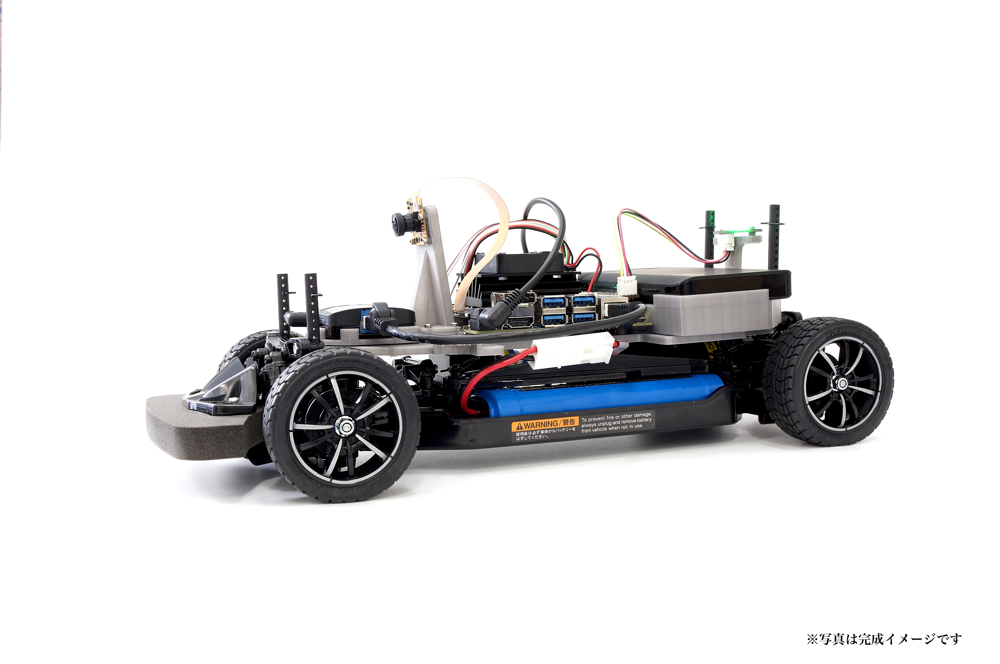

JetRacer Docs

※写真は開発中のものです。
JetRacer Docsについて
JetRacer Docsは、FaBo JetRacerの学習用ドキュメントです。
サポート Discord
修正依頼等
GithubのRepoにIssuesをあげる。
購入先(FaBo Store)
本ドキュメントでのセミナーの実施
- 2019年12月5日 JetRacerハンズオン(主催 NTTコムエンジニアリング)(35台)
- 2019年12月17日 JetRacerハンズオン(主催 NTTコムエンジニアリング)(35台)
- 2019年12月24日 JetRacerハンズオン(主催 NTTコムエンジニアリング)(35台)
関連記事
- 誰もが童心に帰って楽しくAIを習得できるJetRacerハンズオン
- NTTコムエンジが社員のAI学習教材に Jetson Nano搭載「JetRacer」を採用 深層学習とAI推論を体験 マクニカらが提供